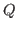
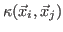
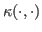
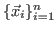
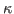
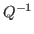
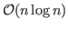
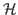
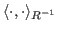
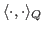

Inverse problems arise in various scientific applications, and Bayesian approaches are often used for solving statistical inverse problems, where unknowns are modeled as random fields and Bayes' rule is used to infer unknown parameters by conditioning on measurements. In this work, we develop iterative methods for solving the following least squares problem, which is equivalent to computing the maximum a posteriori (MAP) estimator
We model the prior covariance matrix

to have entries of the form
, where
is a covariance kernel, and
are spatial points representing the discrete image. We choose
from the Matérn class of covariance kernels, which not only represent a rich class of priors but also are convenient from a theoretical and modeling point of view. However, one of the main challenges of using the Matérn kernels is that
is difficult to obtain and work with, whereas matrix-vector products (matvecs) with can be handled efficiently in
using FFT methods (on regular grids) and using
-matrices (on irregular grids). In our approach, we make an appropriate change of variables and consider a hybrid Golub-Kahan bidiagonalization iterative process with weighted inner products
and
. Our approach avoids forming (either explicitly, or matvecs with) the square root or inverse of the prior covariance matrix . The resulting algorithms are efficient and scalable to large problem sizes.
Our proposed hybrid approach can automatically determine regularization
parameter  , which controls the relative importance between the
prior and the data-misfit part of the likelihood. Hybrid methods project
the original least squares problem onto a smaller dimensional problem,
using orthonormal bases for the Krylov subspaces generated during the
iterative process, and regularization parameters are sought by optimizing
an appropriate functional on the projected problem. In this talk, we show
how several commonly used functionals can be appropriately modified to
handle weighted norms, as in Equation (
, which controls the relative importance between the
prior and the data-misfit part of the likelihood. Hybrid methods project
the original least squares problem onto a smaller dimensional problem,
using orthonormal bases for the Krylov subspaces generated during the
iterative process, and regularization parameters are sought by optimizing
an appropriate functional on the projected problem. In this talk, we show
how several commonly used functionals can be appropriately modified to
handle weighted norms, as in Equation ( ). Since the
regularization parameters are determined on-the-fly during the iterative
process, this approach is attractive for large-scale inverse problems.
). Since the
regularization parameters are determined on-the-fly during the iterative
process, this approach is attractive for large-scale inverse problems.
In order to characterize the uncertainty in parameter reconstruction, we must fully specify the posterior distribution characterized by the MAP estimator and the posterior covariance matrix. However, the posterior covariance matrix is dense, and therefore, storing and computing it is infeasible for large-scale problems. Using the bidiagonalization process, we describe an efficient approach to generate approximations to useful uncertainty measures based on the posterior covariance matrix. In particular, we estimate the variance, which are the diagonals of the posterior covariance, and show how to generate conditional realizations, which are samples from the posterior distribution.
We will demonstrate the benefits of our proposed algorithms on challenging 1D and 2D image reconstruction problems.